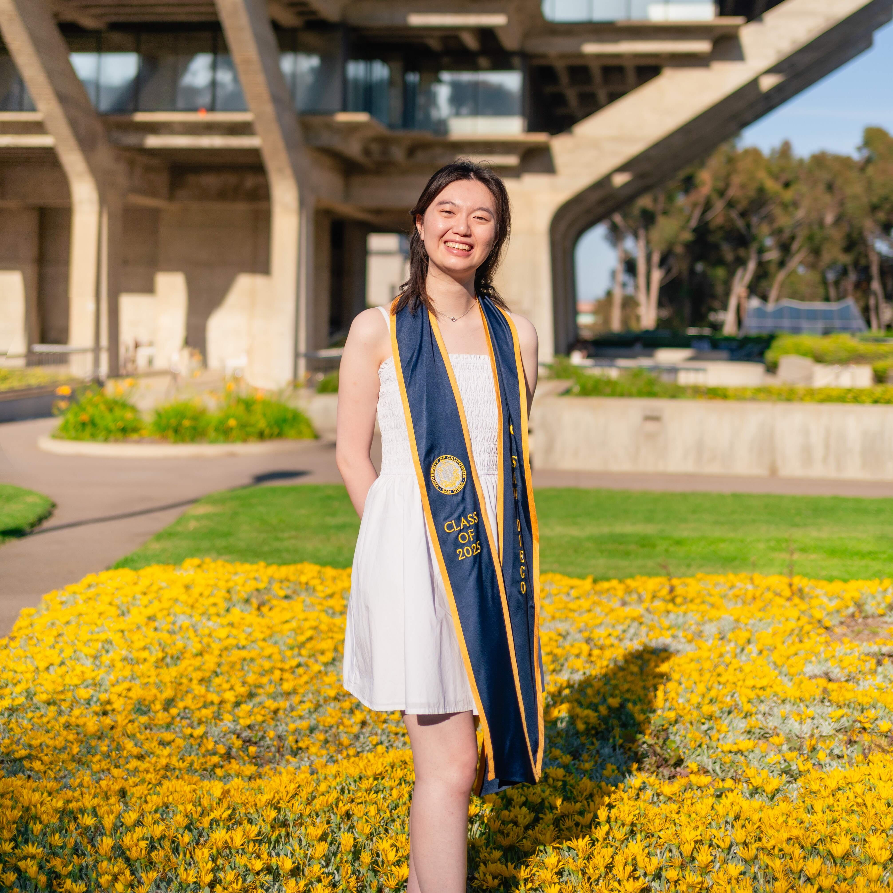

kailey wong

Hi, I'm Kailey! I'm a DevOps Engineer at Lawrence Livermore National Laboratory (LLNL), where I support the infrastructure and services behind AI/ML, large language model (LLM), and cloud-like applications within high-performance computing (HPC) environments.
I earned both my M.S. and B.S. in Computer Science from the University of California, San Diego (UCSD), with a focus on Artificial Intelligence and minors in Mathematics and Music. Before joining LLNL full-time, I spent several years as an intern in the Livermore Computing (LC) division, where I worked on tools and infrastructure to improve high-performance computing technologies and workflows.
My work sits at the intersection of AI/ML, DevOps and infrastructure, and software development. I enjoy building reliable, scalable systems that make complex technologies easier to use and help turn new ideas into practical tools.
Outside of engineering, I'm also interested in design and music. I'm especially drawn to work that combines technical problem-solving with thoughtful, human-centered design to create things that are both useful and enjoyable to use.
When I'm not programming, I enjoy drinking bubble tea, playing board games, and spending quality time with my friends and family.